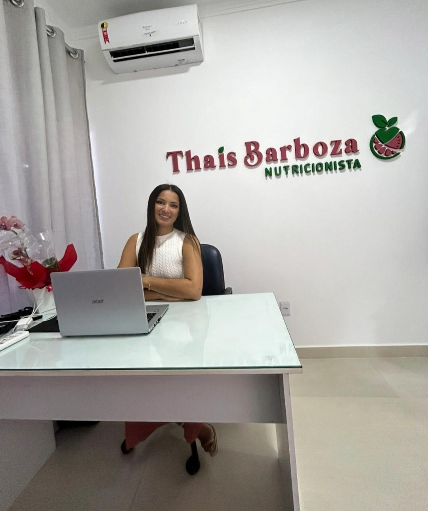

Emagrecimento Saudável
Plano alimentar estratégico para perda de peso de forma segura, sem restrições exageradas.
Saiba maisSou a nutricionista Thais Barboza e já ajudei mais de mil pessoas a emagrecerem de forma saudável, sem dietas restritivas e com qualidade de vida.
Cuidado individual com escuta ativa e planos adaptados à sua rotina.
Reeducação alimentar sem restrições severas, focada em resultados duradouros.
Acompanhamento contínuo com metas claras e evolução mensurável.
Atendimento presencial ou por vídeo, onde você estiver no Brasil.

Nutricionista clínica apaixonada por transformar vidas através da alimentação consciente e equilibrada.
Formada pela Universidade Federal e com especialização em Nutrição Clínica Funcional e Emagrecimento, dedico minha carreira a ajudar pessoas a alcançarem o peso ideal respeitando a individualidade biológica, o prazer de comer e a qualidade de vida.
Minha abordagem une ciência, acolhimento e estratégia para que você conquiste resultados sustentáveis — sem sofrimento, sem dietas milagrosas e sem efeito sanfona.
Planos nutricionais sob medida para cada fase, objetivo e estilo de vida.
Plano alimentar estratégico para perda de peso de forma segura, sem restrições exageradas.
Saiba maisOtimize performance, ganho de massa e recuperação com alimentação alinhada ao seu treino.
Saiba maisInvestigação de causas de sintomas como inchaço, fadiga e desequilíbrios hormonais.
Saiba maisAcompanhamento gestacional, pós-parto e introdução alimentar com segurança.
Saiba maisTratamento de diabetes, colesterol, hipertensão e outras condições clínicas.
Saiba maisAtendimento completo por videochamada com toda a qualidade de uma consulta presencial.
Saiba maisProgramas prontos para diferentes objetivos — feitos com ciência e carinho.
Ganhou uns quilinhos? Este plano de 21 dias reduz inchaço, retenção e acelera resultados.
Programa de 60 dias para perda de peso consistente com alimentação saborosa.
Acompanhamento premium de 6 meses com consultas, ajustes e suporte ilimitado.
Veja o que minhas pacientes dizem sobre o acompanhamento.
"Perdi 12kg em 5 meses com a Thais, sem passar fome e comendo tudo o que gosto. Ela mudou minha relação com a comida e com meu corpo!"
"O cardápio desinchar foi divisor de águas. Em 3 semanas eliminei o inchaço crônico e voltei a me sentir bem com meu corpo."
"Atendimento excepcional, humanizado e muito profissional. A Thais se importa de verdade com o resultado da gente!"
"Nunca imaginei que seria possível emagrecer assim, com leveza e sem culpa. Minha saúde melhorou em todos os aspectos."
"A Thais é uma profissional incrível! Me ajudou a reeducar minha alimentação e hoje tenho muito mais energia e disposição no dia a dia."
"Depois da gestação estava perdida com a alimentação. A Thais me guiou com carinho e ciência. Voltei ao meu peso em 6 meses!"
Conteúdo semanal sobre nutrição, receitas e bem-estar.
Descubra quais alimentos combater retenção de líquidos e reduzir o inchaço naturalmente.
Ler maisAprenda o método do prato ideal para emagrecer sem passar fome e com muito sabor.
Ler maisEntenda os benefícios, contraindicações e como aplicar com segurança na sua rotina.
Ler maisEstou aqui para te ajudar a transformar sua saúde e bem-estar. Entre em contato e dê o primeiro passo!